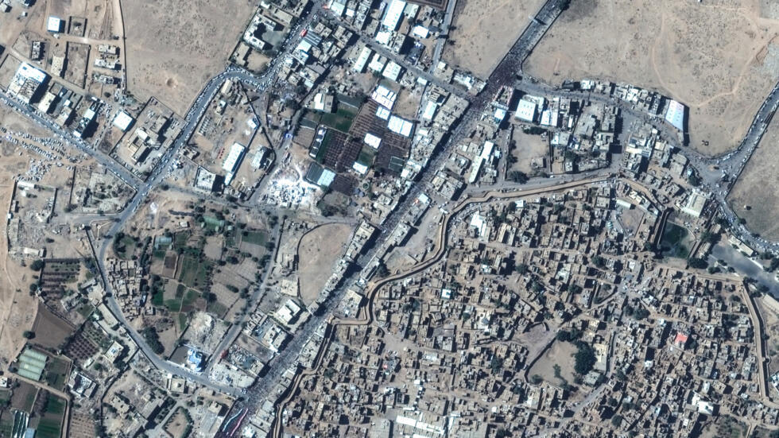

Trump declara el fin de los bombardeos en Yemen tras "rendición" hutí

Anuncio del cese de bombardeos
El presidente de Estados Unidos, Donald Trump, anunció oficialmente el fin de la campaña militar aérea contra los hutíes en Yemen. En un mensaje transmitido desde la Casa Blanca, Trump afirmó que los líderes rebeldes “se rindieron” y prometieron detener sus ataques en el mar Rojo y el estrecho de Bab al-Mandeb, dos rutas marítimas claves para el comercio internacional. “Los hutíes simplemente no quieren pelear más”, dijo el mandatario. La decisión, según explicó, representa un logro diplomático y militar que evitará futuras escaladas bélicas en Medio Oriente.
Origen del conflicto
La intervención estadounidense se desencadenó en marzo de 2025, luego de que los rebeldes hutíes, apoyados por Irán, intensificaran ataques con drones y misiles contra buques mercantes y militares en el mar Rojo, una vía crítica para el transporte de petróleo y mercancías. Además, los hutíes lanzaron misiles balísticos hacia Israel en solidaridad con Hamas durante la ofensiva israelí en Gaza. La administración Trump consideró que los ataques representaban una amenaza directa a la seguridad marítima y regional, por lo que autorizó una respuesta militar inmediata y masiva.
Balance de la ofensiva militar
En poco más de dos meses, Estados Unidos ejecutó más de 800 ataques aéreos sobre objetivos hutíes en Yemen. El Pentágono informó que los bombardeos se dirigieron principalmente contra instalaciones militares, arsenales de misiles, sistemas de radar y centros de comando. Sin embargo, organizaciones humanitarias han denunciado que varios ataques alcanzaron zonas civiles. Uno de los episodios más letales fue el bombardeo del puerto petrolero de Ras Isa, que causó la muerte de al menos 74 personas y dejó más de 170 heridos, según cifras difundidas por medios hutíes.
Negociaciones y mediación internacional
El alto el fuego fue alcanzado gracias a una mediación diplomática encabezada por Omán, país con relaciones tanto con Estados Unidos como con Irán. El enviado especial estadounidense, Steve Witkoff, sostuvo encuentros en secreto con delegaciones hutíes en Mascate. Aunque Trump presentó el resultado como una "rendición" del enemigo, fuentes cercanas a la negociación indicaron que se trató más bien de un compromiso verbal condicionado, y no de un acuerdo firmado. Esto genera incertidumbre sobre la sostenibilidad del cese de hostilidades a largo plazo.
Reacción de los hutíes y dudas sobre el acuerdo
A pesar del anuncio de Trump, líderes hutíes desmintieron que se haya alcanzado un acuerdo formal. En declaraciones difundidas por medios controlados por los rebeldes, un alto comandante hutí aseguró que seguirán atacando “objetivos israelíes” mientras continúe la ofensiva sobre la Franja de Gaza. Esta declaración pone en entredicho la versión estadounidense de una capitulación total y revela las profundas divisiones entre la narrativa oficial de Washington y la posición real del movimiento rebelde.